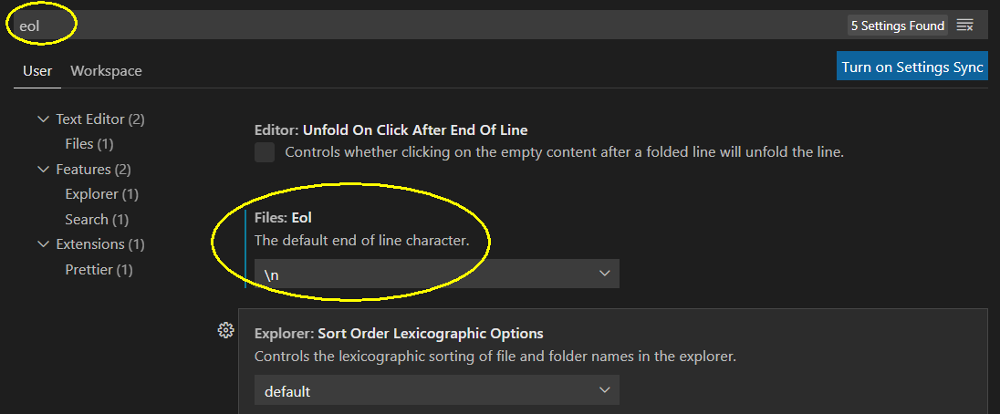
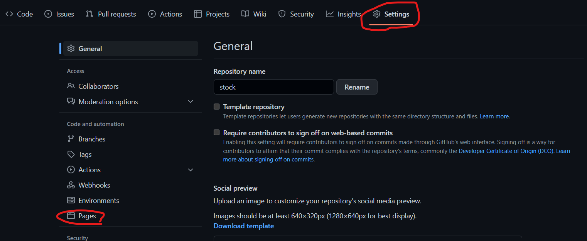
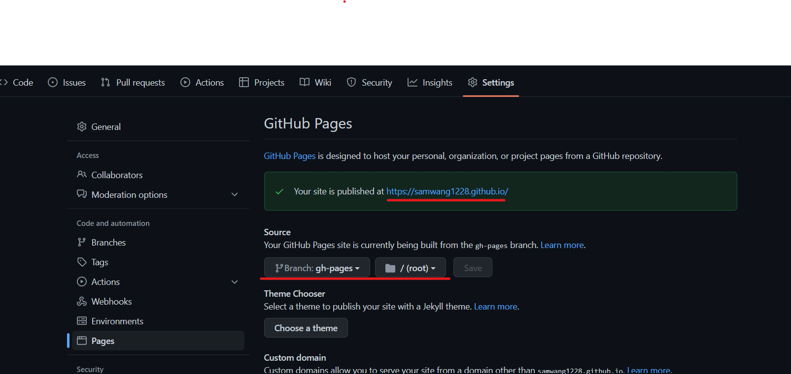

前言
為什麼要撰寫自己的Blog呢?
首先Blog可以記錄自己的成長且在繳交履歷時也能附上，同時也能證明自己外也能吸引別人來觀看以提升知名度。
為什麼要用hexo呢?
而選擇hexo是因為:
- 可以部署到自己的github更能證明是自己的，同時github page是免費的
- hexo有提供100多種模板所以美編不好的工程師也能寫出好看的Blog
- 文章皆採用markdown語法可以讓你更專注在寫文章上，而非抵bug上 (笑
- hexo有許多中文教學上手很快
- 很多套件可使用ex ga、vtuber、留言板
目錄
1.配置環境
a.首先要安裝node.js 連結在這 (選擇自己對應的作業系統即可)
b.安裝 hexo CLI(記得先選你要的資料夾在cmd cd過去在打指令 )1
2
3
4
5npm install -g hexo-cli//可以讓hexo使用指令的工具wls
hexo init <folder> //創建blog 這裡的名字對應資料夾名字<>不用照打
cd <folder>
npm install //下載縮需套件
hexo s //打開hexo server
做完以上幾步若有跑出 Hexo is running at http://localhost:4000/
且在瀏覽器打上http://localhost:4000/ 是有東西的則代表成功!!!
2.常用指令
可透過hexo help看有什麼功能下面列出較常用的1
2
3
4
5
6hexo server //開啟hexo server
hexo generate //產生html檔案
hexo clean //清除上一份產生的html file，當有換模板或大改建使用
hexo deploy //push到自定義的地方ex今天type選git就是push到github
hexo version //查看hexo版本
hexo new post filename //創建新的文章且檔名叫filename.md
由於hexo的每個指令的英文單字開頭都是不一樣的所以可直接打開頭就好
舉例:hexo server –> hexo s
3.git指令與windos設定
首先創建github帳號右上方有個+ 點選new repository他會叫你打你的倉庫名字
注意倉庫名字必須為 username.github.io username為你自己的github name點選創建後會跳出一個充滿指令的頁面請不要關掉!!!
然後在你剛才打過hexo server的路徑打上(也就是cd folder的位置)1
2
3
4
5
6git init
git add .
git commit -m 'first commit'
git branch -M main
git remote add origin <你自己的倉庫> //<你自己的倉庫>請對照充滿指令的頁面
git push -u origin main
若你是windows可能會在git add . 這一步遇到(若沒遇到可直接跳過至下一個主題)
這是因為 Mac 和 Windows 的換行字元有關:
- Windows/Dos 系統，採用CR+LF表示，符號\r\n
- 現今的 Mac 系統，採用LF表示，符號\n
接著在vscode的終端機打上1
2
3
4git config –-global core.autocrlf
# 輸入該指令查看是 false 還是 true
git config –-global core.autocrlf false
# 這裡的意思是關閉自動轉換成crlf
接著對vscode進行修改

最後在打上1
git ls-files — eol
就可以重新git add .並push啦!!!
4.github page建置
首先要在目錄底下的_config.yml 找到deploy:並提換成以下code1
2
3
4deploy:
type: git
repo: 你的repo //ex:git@github.com:xxxx/hexo-demo.git
branch: gh-pages //branch:gh-pages
接者安裝套件以及push html file1
2
3
4//push
npm install hexo-deployer-git --save //install hexo自動部署工具
hexo g
hexo d //push public to branch:gh-pages
再來去以下地方就能找到你的url了


5.模板使用
終於最後一步了 (灑淚
取此地方挑選你要的模板link
點選圖片是查看模板demo的樣子，點選下方文字則是進到模板的github
進到模板的github後會有詳細的操作，統常有以下兩種:
- download zip檔後將他複製到你自己theme的資料夾裡然後在_config.yml找到theme:landscape，把landscape改成你剛才下載的模板folder name，接著在hexo c 、 hexo s查看有無成功。
- 把zip檔解壓後直接打npm install也就是擴充作者的(步驟可能不一樣請查看作者的說明文件)
###狀況題:
hexo g 出現的html為空白時
因為你的node.js與hexo版本不相容
方法1:更新hexo方法如下1
2
3
4
5npm install -g hexo-cli
hexo version//如果這裡依舊一樣
npm install -g npm-check
npm-check//透過這個查看需更新的套件上面的msg 會告訴你指令照這打
方法2:降低node.js版本
查看對應版本 在最下面
結語:
我還是個blog初新者可能寫的還不是很好，若大家有遇到什麼問題歡迎在底下留言我看到會盡快回復，又或者有什麼想看的文章都可以告訴我喔！